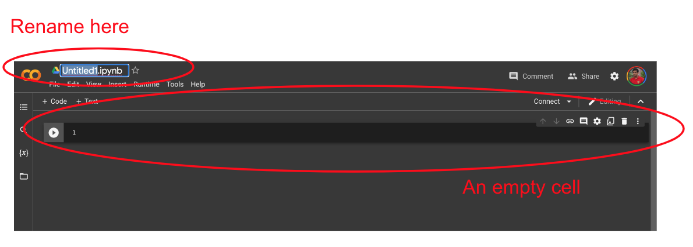
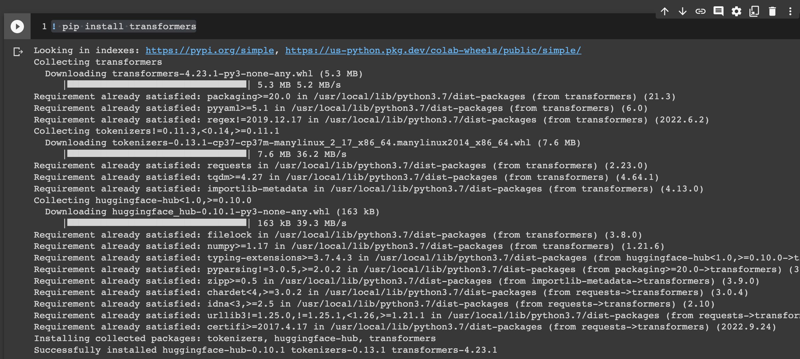
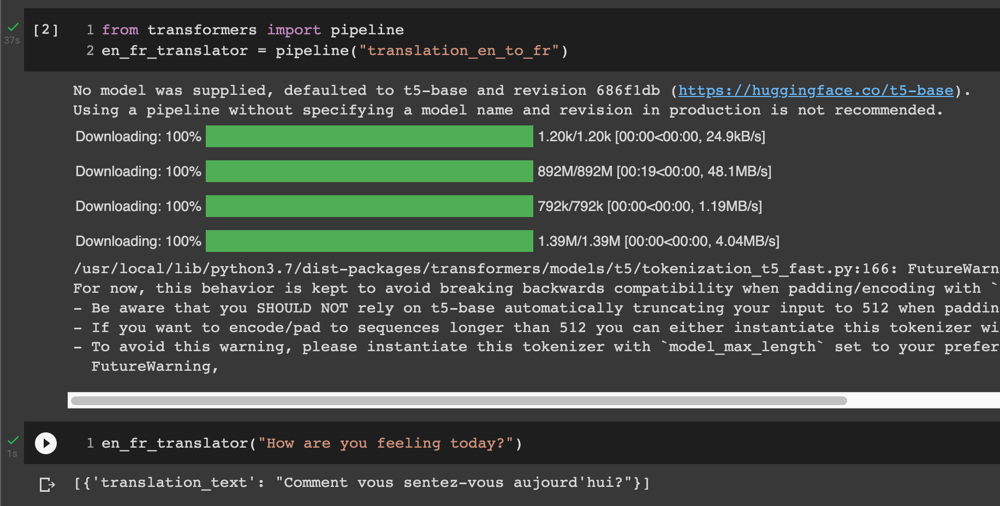
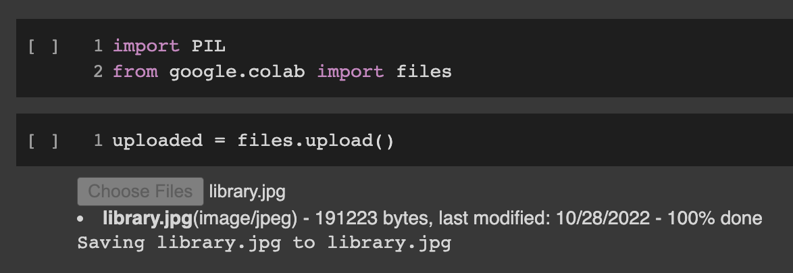
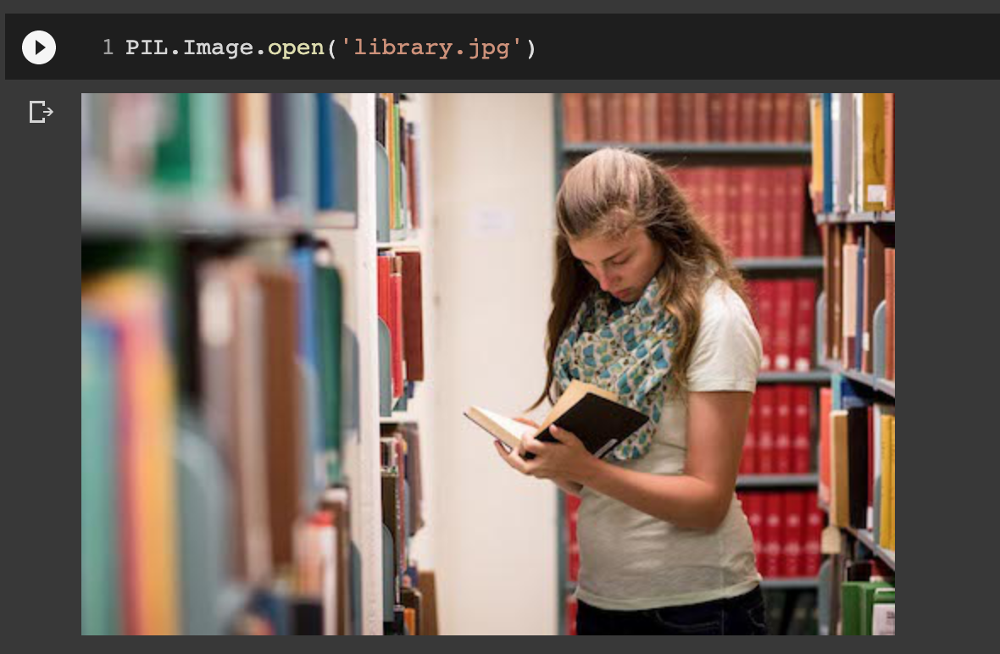
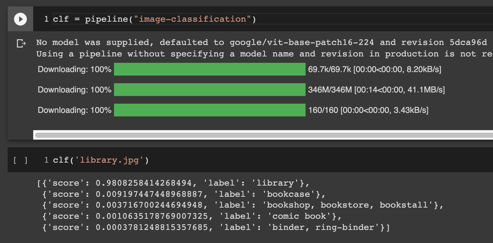

More Modules
In the previous chapter you used you saw how packages are built in Python. You also built and imported a module that you had made yourself. The power of using Python modules is that you can import modules that are built by others. Often these packages are accumulation of many years of work by a large army of engineers. Python has thousands of free packages that you can use to make your own impressive programms. In this chapter we see a very quick introduction to a couple of packages that helps you build cool applications.
Google Colab
For this chapter we are going to use a very powerful tool for writing and testign Python code quickly. Google Colab is a category of softwares known as notebooks. They help you write a program in small units called cells, and run them together. They also help you have other things along with your code. You can include pictures, movies and of course notes in a botebook.
The first step to use Colab is having a Google account and being logged in. Then go to the following address:
https://colab.research.google.com
Now you should see the Colab first page that in October 2022, looks like the following image. Notice that if you have logged in your browser, you should see your Google profile image in the top right corner; as you see mine here.

Simple code
Now use the file menu that you see here to create a "New notebook". You see the following page for a new notebook. You can click on the name of the notebook (that might be Untitled now) to rename your notebook. Feel free to rename your notebook to something more reasonable.
Your new notebook has a single empty cell in it. You can click on +Code on the top bar to add a new cell. You can type code inside a cell like you did in a file. When you press Shift + Enter keys togther, or pressing the play button on the left side of the cell.
Python Packages
You imported and used some Python modules that comes out of the box with Python before (remember importing random and math). Colab comes with some extra external Python packages that are included for easily importing modules. There remains thousands of other packages that you can install on your computer for Python to use. We are going to start by installing a useful and easy to use Python package: Hugging Face.
Run this in cell to install the huggingface package.
You will see the output of the cell and the steps to install this package. And at the end you must see the message that tells you the install was successful. Now we are ready to make some pretty cool Artifical Intelligence with Python.
Translate
The first thing we want to try with the Hugging Face package we installed is building something that can translate. Here we are using two cells, as you see in the screenshot below. The first cell imports the module and creates and object that does translation for us (this is the en_fr_translator object).
In a notebook the objects and variables that you created in one cell will remain in notebook as long as you keep your notebook open. This means that you can use them in other cells of the notebook. And this is what we do in the second cell. We directly call the en_fr_translator object to do translation from English to French.
What's in a photo
In this excercise we are going to show a photo to an Artifical Intelligence built in our module and ask it to tell us what is in this photo. For this we import another module that loads and shows images, and another packages that helps up upload files to Colab. Here, the first cells it importing these modules. The second cell runs the upload function. This will show you a button that you can use to upload a file. After you upload your file, you see a message that tells you this file (in my example library.jpg) is stored on the Google computer that runs Colab for you.
Now you can use the PIL package that we had imported to show this image. Remember to use the name of the file you uploaded. As you see, the notebook shows the image that I uploaded as the cell output.
Now, we will do something similar to what we did with the translation: we are building and object (using the Hugging Face package) that tells us what is in this image. The output here is a list of things that the Artifical Intelligence you just created in your program thinks this picture shows. It can not be completely sure, so it has a few guesses. Each of the items we have in this list is one of the guesses, and how certain it is about the photo being from that object. A certainty of 1 means it is 100% sure, and a certainty of 0.92 means means 92%, and so on.
